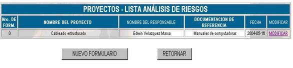
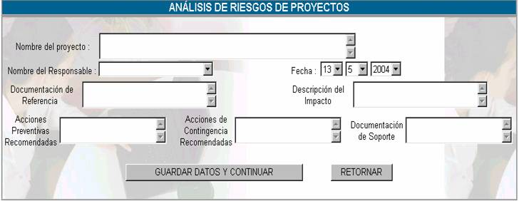
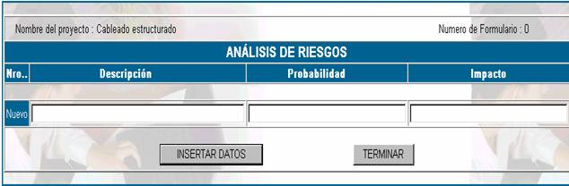

ANÁLISIS DE RIESGOS
Esta opción permite realizar el análisis de riesgos que pueden afectar al proyecto, la pantalla principal se muestra a continuación

Donde:
Nro de Form: se refiere al número de formulario que se asigna correlativamente a cada análisis de riesgo que se hace para cada proyecto.
Nombre del proyecto ; se refiere al nombre del proyecto al cual el riesgo puede afectar
Documentación de referencia; se refiere a la documentación de referencia que se utilizó para realizar el análisis de riesgos
Fecha; hace referencia a la fecha en la cual se realizó dicho análisis.
Nuevo Formulario;
cuando usted hace click en este botón parecerá la pantalla siguiente:
Nombre del proyecto;
en este campo se especifica el nombre del proyecto del cual se está realizando el análisis de riesgosNombre del responsable; se puede asignar esta tarea a uno de los usuario.
Documentación de referencia; se refiere a la documentación en la cual se basa para realizar el análisis de riegos, dependiendo de los códigos que establezca el manual de procedimientos.
Documentación de soporte; se refiere a la documentación que ayuda de alguna forma a realizar el análisis de riesgos.
Descripción del impacto; se debe hacer una descripción detallada de lo posibles daños que se tenga en caso de que se materialice la amenaza, también tomando en cuenta la probabilidad de ocurrencia del riesgo.
Acciones preventivas recomendadas; se refiere a las acciones recomendadas por el especialista para que el riesgo no tenga impacto y no existan consecuencias.
Acciones de contingencia recomendadas; se refiere a las acciones que deben tomarse en caso de que el riesgo tenga curso, estas pueden ser determinadas con anterioridad.
Una vez que usted presione sobre el botón GUARDAR Y CONTINUAR aparecerá la siguiente pantalla.

Como puede observar en la parte superior de la tabla aparece especificado el nombre del proyecto
Nro. Este campo se refiere al número de riesgo que puede ocurrir
Probabilidad: Es un índice del 0 al 1 y determina cuán probable es que un riesgo se materialice, mientras más cerca esté de 1 entonces se debe tomar acciones preventivas.
Impacto: Describe que es lo que puede ocurrir si es que el riesgo ocurre.
Una vez que usted haya registrado estos datos, presione el botón INSERTAR DATO y luego presione el botón TERMINAR. y aparecerá la lista de análisis de riesgos.
Modificar; esta opción sirve para cambiar los datos del análisis de riesgos, entonces, para tener acceso a esto, haga un click en el vinculo y le aparecerán todas las opciones, con los datos que usted insertó en el momento del registro.